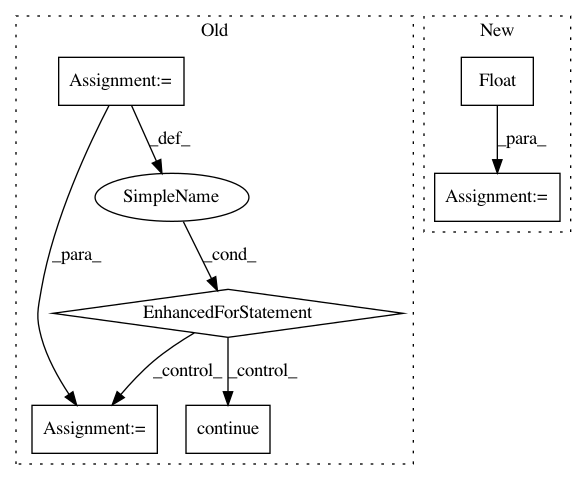

9cf8f6cdf6a2008843cb37da6e34b8d10353b0bf,ml/rl/preprocessing/sparse_to_dense.py,PythonSparseToDenseProcessor,process,#PythonSparseToDenseProcessor#Any#,73
Before Change
dense_presence = torch.zeros(
[len(sparse_data), len(self.feature_id_to_index)]
).byte()
for i, feature_map in enumerate(sparse_data):
assert (
feature_map is not None
), f"Please make sure that features are not NULL; row {i}"
for j, value in feature_map.items():
j_index = self.feature_id_to_index.get(j, None)
if j_index is None:
continue
dense_data[i][j_index] = value
dense_presence[i][j_index] = 1
if self.set_missing_value_to_zero:
// When we set missing values to 0, we don"t know what is and isn"t missing
dense_presence = dense_data != 0.0
return (dense_data, dense_presence)
After Change
for col in self.sorted_features:
if col not in state_features_df.columns:
state_features_df[col] = missing_value
values = torch.from_numpy(
state_features_df[self.sorted_features].values
).float()
if self.set_missing_value_to_zero:
// When we set missing values to 0, we don"t know what is and isn"t missing
presence = torch.ones_like(values, dtype=torch.bool)
else:
presence = values != missing_value
return values, presence
In pattern: SUPERPATTERN
Frequency: 3
Non-data size: 6
Instances
Project Name: facebookresearch/Horizon
Commit Name: 9cf8f6cdf6a2008843cb37da6e34b8d10353b0bf
Time: 2019-12-12
Author: kittipat@fb.com
File Name: ml/rl/preprocessing/sparse_to_dense.py
Class Name: PythonSparseToDenseProcessor
Method Name: process
Project Name: ilastik/ilastik
Commit Name: c70362d7dae523cce63c049da17f39a340139574
Time: 2015-03-20
Author: webmaster@burgerdev.de
File Name: lazyflow/operators/opCompressedCache.py
Class Name: OpCompressedCache
Method Name: usedMemory
Project Name: dmlc/dgl
Commit Name: 5d3f470b721db2a23dcc1a3880c1e31216e06233
Time: 2019-08-05
Author: expye@outlook.com
File Name: python/dgl/batched_graph.py
Class Name:
Method Name: _max_on